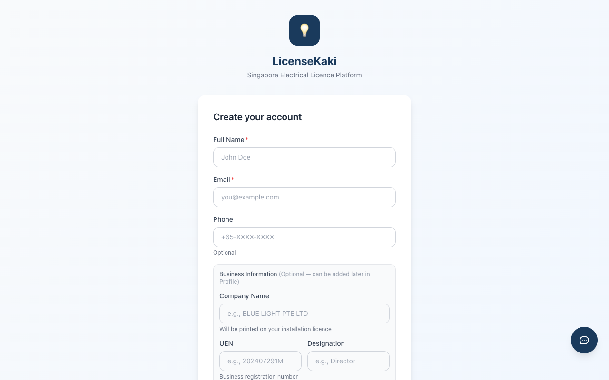
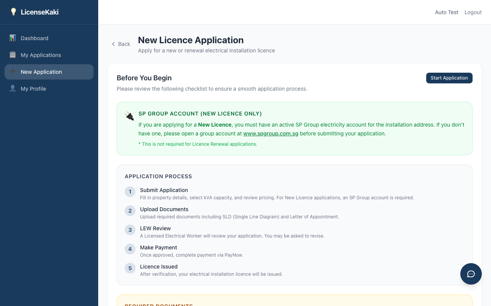
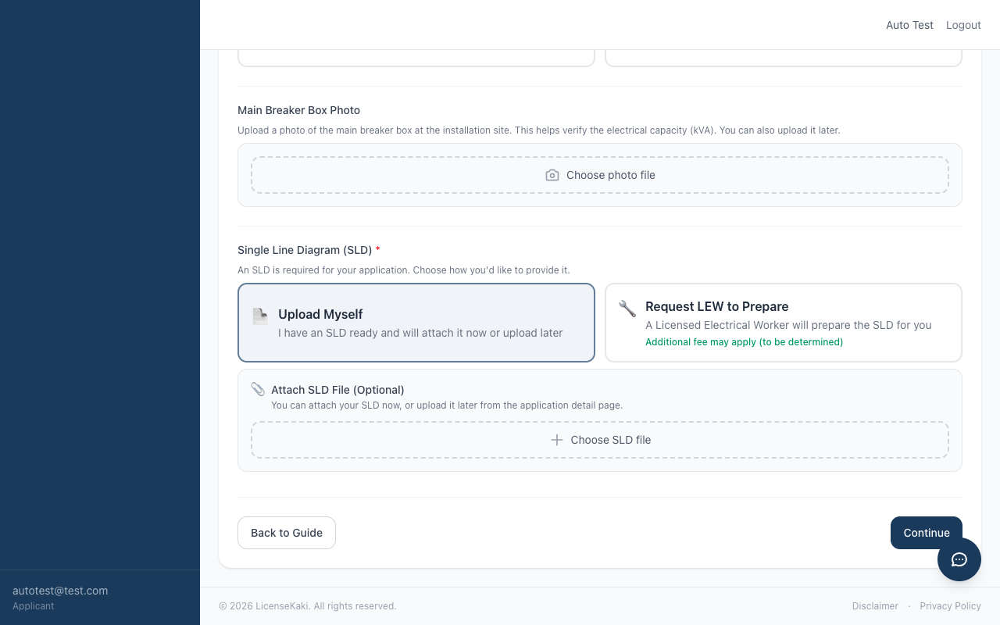
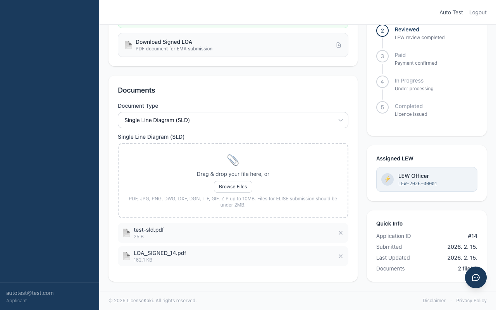
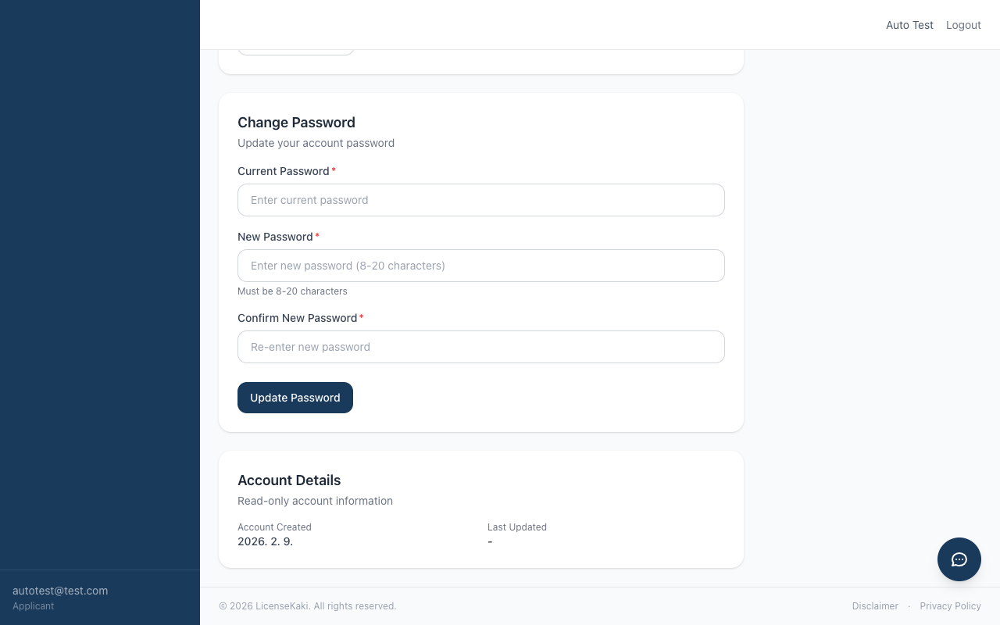
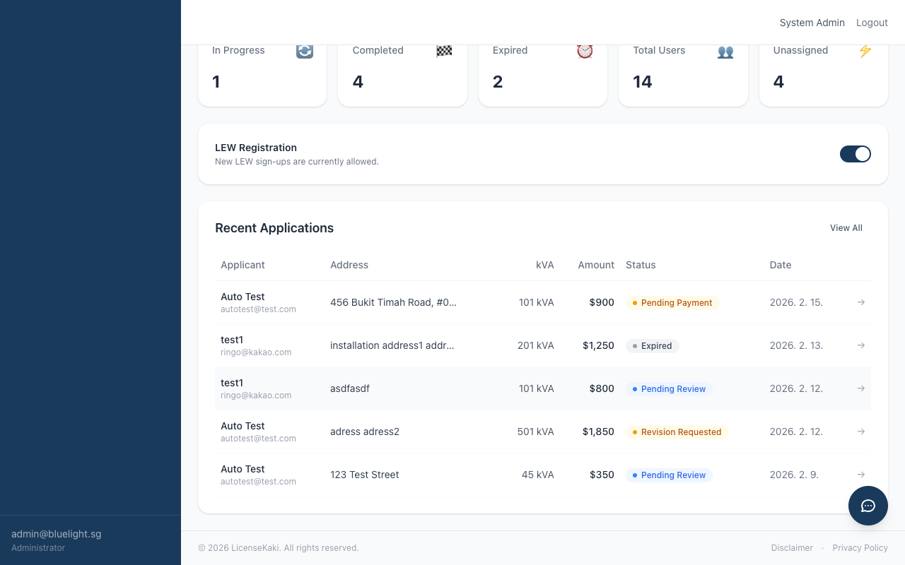
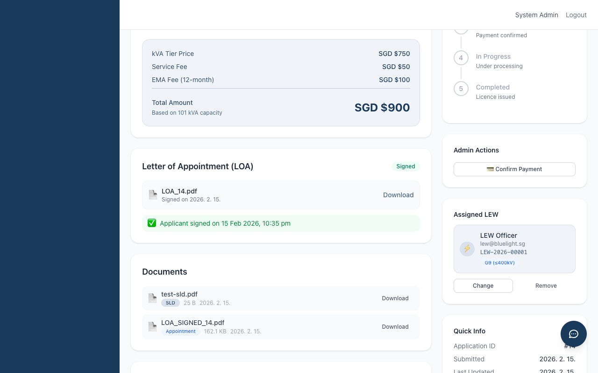
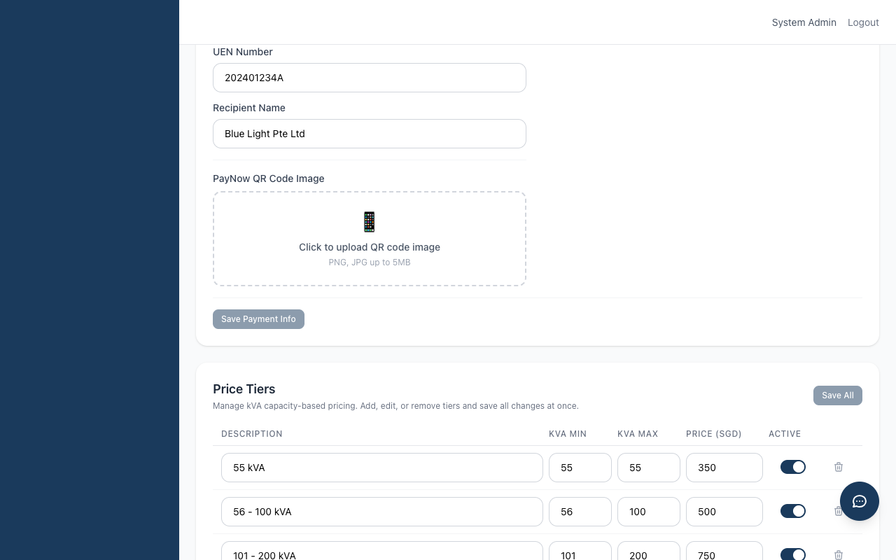
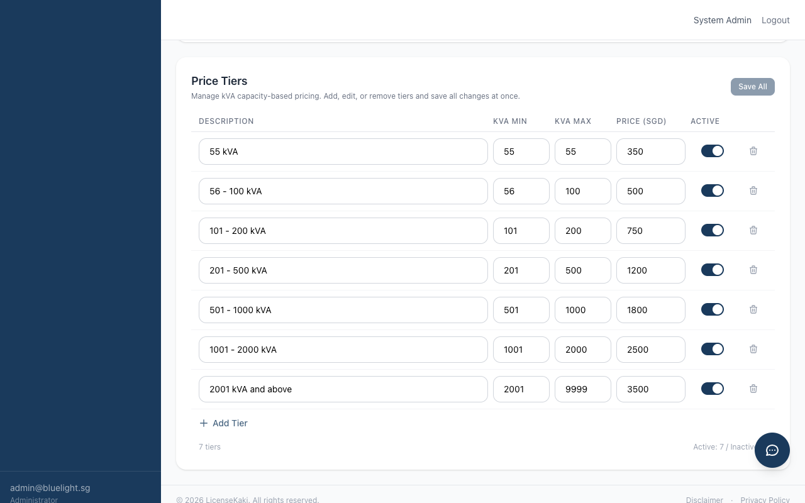
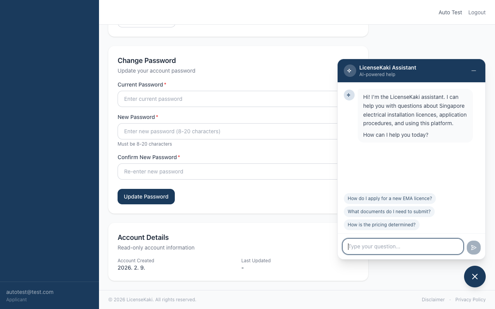

💡
LicenseKaki
싱가포르 전기 설비 면허 플랫폼
사용자 매뉴얼
Version 3.0
2026년 2월
LicenseKaki Pte Ltd
목차
- 1. 소개
- 1.1 LicenseKaki 소개
- 1.2 사용자 역할
- 1.3 신청 상태 흐름
- 2. 시작하기
- 2.1 계정 만들기
- 2.1.1 신청자(Building Owner) 회원가입
- 2.1.2 LEW(공인 전기 기술자) 회원가입
- 2.2 로그인
- 2.3 비밀번호 찾기
- 2.4 이메일 인증 (활성화 시)
- 3. 신청자(Applicant) 가이드
- 3.1 대시보드
- 3.2 새 신청서 작성
- 3.2.1 시작하기 전에
- 3.2.2 Step 1: 신청 유형 및 옵션
- 3.2.3 Step 2: 설치 주소
- 3.2.4 Step 3: kVA 및 가격
- 3.2.5 Step 4: 검토 및 제출
- 3.3 내 신청 목록
- 3.4 신청 상세 보기
- 3.4.1 신청 정보
- 3.4.2 위임장(LOA)
- 3.4.3 서류 및 SLD 요청
- 3.4.4 결제 정보
- 3.4.5 면허 정보 및 다운로드
- 3.5 수정 요청 대응
- 3.6 결제하기
- 3.7 내 프로필
- 4. LEW(공인 전기 기술자) 가이드
- 4.1 LEW 등록 및 승인
- 4.2 LEW 대시보드
- 4.3 신청서 검토
- 4.4 SLD 요청 관리
- 4.5 LOA 관리
- 4.5.1 신규 면허 — LOA 자동 생성
- 4.5.2 면허 갱신 — LOA 업로드
- 5. 관리자(Admin) 가이드
- 5.1 관리자 대시보드
- 5.2 신청 관리
- 5.3 신청 처리 (단계별)
- 5.3.1 검토 및 승인
- 5.3.2 결제 확인
- 5.3.3 처리 및 면허 발급
- 5.4 LEW 배정
- 5.5 LOA 관리
- 5.6 SLD 요청 관리
- 5.7 사용자 관리
- 5.8 시스템 설정
- 5.8.1 이메일 인증
- 5.8.2 서비스 수수료
- 5.8.3 결제 정보
- 5.8.4 가격 등급 관리
- 6. AI 챗봇 도우미
- 6.1 개요
- 6.2 챗봇 사용 방법
- 6.3 사용 제한
- 부록
- A. kVA 가격표
- B. 지원 파일 형식
- C. 면허 수수료
- D. 추가 참고사항
1. 소개
1.1 LicenseKaki 소개
LicenseKaki는 싱가포르 에너지시장청(EMA)의 전기 설비 면허(Electrical Installation Licence)를 신청하고 관리하기 위한 웹 기반 플랫폼입니다. 신청서 제출부터 서류 관리, LEW 검토, LOA 서명, 결제 처리, 면허 발급까지 전체 면허 관리 주기를 간소화합니다.
주요 기능:
- 온라인 신청 — 신규 면허 및 면허 갱신을 위한 단계별 가이드 폼
- 서류 관리 — SLD, 위임장, 메인 브레이커 박스 사진 등 필요 서류 업로드
- LOA 생성 및 전자 서명 — 자동 LOA PDF 생성 및 전자 서명 기능
- SLD 요청 워크플로 — LEW에게 단선도(SLD) 작성 요청
- 실시간 상태 추적 — 제출부터 면허 발급까지 시각적 진행 추적
- 유연한 가격 설정 — kVA 기반 동적 가격 등급 및 일괄 관리
1.2 사용자 역할
| 역할 | 설명 | 접근 권한 |
|---|
Applicant
(건물 소유자) |
전기 설비 면허를 신청하는 건물 소유자 또는 대리인. 신청서 제출, 서류 업로드, LOA 서명, 진행 상황 추적이 가능합니다. |
대시보드, 내 신청 목록, 새 신청, 내 프로필 |
LEW
(공인 전기 기술자) |
신청서를 검토하고, SLD 문서를 준비하고, LOA를 생성하는 EMA 공인 전기 전문가. 가입 후 관리자 승인이 필요합니다. |
관리자 대시보드, 신청 목록 (열람 및 검토), LOA 생성, SLD 업로드 |
Admin
(관리자) |
신청 전체 생명주기, 사용자, 가격, 시스템 설정을 관리하는 플랫폼 관리자 |
전체 접근: 대시보드, 신청, 사용자, 시스템 설정 |
1.3 신청 상태 흐름
모든 면허 신청은 다음 상태를 거쳐 진행됩니다:
검토 대기
→
수정 요청
↔
검토 대기
→
결제 대기
→
결제 완료
→
처리 중
→
완료
| 상태 | 설명 | 신청자 행동 | 관리자 / LEW 행동 |
|---|
Pending Review
(검토 대기) | 신청서 제출 완료, LEW 검토 대기 중 | 서류 업로드, LOA 서명 | LEW 배정, LOA 생성, 검토 → 승인 또는 수정 요청 |
Revision Requested
(수정 요청) | LEW 검토 결과 수정 필요 | 수정 후 재제출 | 재제출 대기 |
Pending Payment
(결제 대기) | 신청 승인됨, 결제 필요 | 결제 정보 확인 후 결제 | 결제 확인 |
Paid
(결제 완료) | 결제 확인됨 | 대기 | 처리 시작 |
In Progress
(처리 중) | 면허 처리 진행 중 | 필요 시 추가 파일 업로드 | 면허 PDF 업로드, 완료 및 면허 발급 |
Completed
(완료) | 면허 번호 및 만료일과 함께 면허 발급됨 | 면허 정보 확인 및 다운로드 | — |
Expired
(만료) | 기한 내 미결제 | — | — |
2. 시작하기
2.1 계정 만들기
2.1.1 신청자(Building Owner) 회원가입
1
로그인 페이지에서 "Create account"를 클릭하거나, 회원가입 페이지로 직접 이동합니다.

그림 2.1 — 회원가입 페이지 (신청자)
2
필수 정보를 입력합니다:
- Full Name (필수) — 이름
- Email (필수) — 로그인 아이디로 사용됩니다
- Phone (선택) — 전화번호
- Business Information (선택 — 회사명, UEN, 직위. 가입 시 선택이며 나중에 프로필에서 추가 가능)
3
Account Type으로 "Building Owner (Applicant)"를 선택합니다.

그림 2.2 — 계정 유형 선택 및 PDPA 동의
4
비밀번호(8~20자)를 설정하고 확인 입력한 뒤, Privacy Policy & Disclaimer에 동의하고 "Create Account"를 클릭합니다.
⚠️ LOA에 필요한 사업자 정보: 성명(Full Name), 회사명, UEN, 직위, 통신 주소는 위임장(LOA) 자동 생성에 필요합니다. 이 정보가 프로필에 입력되지 않으면 LOA를 자동 생성할 수 없습니다. 지연을 방지하기 위해 가능한 빨리 입력해 주세요.
2.1.2 LEW(공인 전기 기술자) 회원가입

그림 2.3 — LEW 회원가입 (추가 필드)
LEW로 가입할 때 두 가지 추가 필드가 필요합니다:
- LEW Licence Number — EMA 발급 면허 번호 (예: LEW-2026-XXXXX)
- LEW Grade — 등급 선택:
- Grade 7: ≤ 45 kVA
- Grade 8: ≤ 500 kVA
- Grade 9: ≤ 400 kV
⚠️ LEW 승인 필요: 가입 후 계정은 "Pending" 상태가 됩니다. 관리자가 승인해야 플랫폼에 접근할 수 있으며, 승인 전까지 대기 페이지가 표시됩니다. 승인 후에는 로그아웃 후 다시 로그인해야 접근 권한이 활성화됩니다.
2.2 로그인

그림 2.4 — 로그인 페이지
3
역할에 따라 해당 대시보드로 이동됩니다:
- Applicant → 신청자 대시보드 (
/dashboard)
- LEW (승인됨) → 관리자 대시보드 (
/admin/dashboard)
- Admin → 관리자 대시보드 (
/admin/dashboard)
ℹ️ 로그인 시도 제한: 보안을 위해 시스템은 로그인 시도를 15분당 5회로 제한합니다. 초과 시 잠시 기다린 후 다시 시도해야 합니다.
2.3 비밀번호 찾기
1
로그인 페이지에서 "Forgot your password?"를 클릭합니다.
2
등록된 이메일 주소를 입력하고 "Send Reset Link"를 클릭합니다.
3
이메일로 전송된 재설정 링크를 확인합니다 (1시간 유효).
4
링크를 클릭하고, 새 비밀번호(최소 8자)를 설정한 후 로그인합니다.
2.4 이메일 인증 (활성화 시)
관리자가 시스템 설정에서 이메일 인증을 활성화한 경우, 신규 사용자는 플랫폼 접근 전에 이메일을 인증해야 합니다:
1
회원가입 후 이메일 인증 대기 페이지로 이동됩니다.
2
등록된 이메일 수신함에서 인증 링크를 확인합니다.
3
이메일의 링크를 클릭하면 "Email Verified!" 확인 페이지가 표시됩니다.
4
"Sign In"을 클릭하여 로그인 페이지로 이동합니다.
ℹ️ 이메일을 받지 못한 경우: 대기 페이지에서 "Resend Verification Email" 버튼을 클릭하세요. 문제가 지속되면 관리자에게 문의하세요.
💡 참고: 이메일 인증은 관리자가 제어하며, 기본적으로 비활성화되어 있습니다. 비활성화 상태에서는 가입 후 이메일 인증 없이 바로 로그인할 수 있습니다.
3. 신청자(Applicant) 가이드
3.1 대시보드
대시보드에서 신청 현황을 한눈에 확인할 수 있습니다:
- 요약 카드 — 전체 신청, 검토 대기, 결제 대기, 처리 중, 완료
- 최근 신청 — 최근 5건의 신청서 (상태, kVA, 금액 포함)
- "+ New Application" 버튼으로 새 면허 신청 시작
3.2 새 신청서 작성
신청 폼은 상단에 진행 표시기가 있는 4단계 마법사 형태입니다:
| 단계 | 제목 | 설명 |
|---|
| 1 | 유형 | 신청 유형, SP 계정, 면허 기간, SLD 옵션, 파일 업로드 |
| 2 | 주소 | 설치 주소, 우편번호, 건물 유형 |
| 3 | kVA & 가격 | 용량 선택 및 가격 확인 |
| 4 | 검토 | 전체 정보 확인 후 제출 |
3.2.1 시작하기 전에

그림 3.2 — 시작하기 전에 안내 페이지
신청 폼을 시작하기 전에 다음 정보 섹션이 있는 안내 페이지가 표시됩니다:
🔌 SP Group 계정 (신규 면허만 해당): 신규 면허를 신청하는 경우, 설치 주소에 대한 활성 SP Group 전기 계정이 필요합니다. 계정이 없는 경우
www.spgroup.com.sg에서 그룹 계정을 개설한 후 신청서를 제출하세요. 면허 갱신 신청에는 해당되지 않습니다.
신청 절차 (5단계)
- 신청서 제출 — 건물 정보 입력, kVA 용량 선택, 가격 확인. 신규 면허의 경우 SP Group 계정이 필요합니다.
- 서류 업로드 — SLD, 위임장 등 필요 서류를 업로드합니다.
- LEW 검토 — 공인 전기 기술자가 신청서를 검토합니다. 수정이 요청될 수 있습니다.
- 결제 — 승인 후 PayNow로 결제합니다.
- 면허 발급 — 확인 후 전기 설비 면허가 발급됩니다.
필요 서류 체크리스트
| 서류 | 설명 |
|---|
| 단선도 (SLD) | 허용 형식: PDF, JPG, DWG, DXF, DGN, TIF, GIF, ZIP |
| 위임장 (Letter of Appointment) | 공인 전기 기술자를 임명하는 서명된 위임장 |
| 메인 브레이커 박스 사진 | 설치 현장의 메인 브레이커 박스 사진 (JPG, PNG) |
💡 팁: 모든 서류는 신청 제출 후 신청 상세 페이지에서 업로드할 수 있습니다. 다만, 미리 준비해 두면 절차가 빨라집니다.
주요 안내
- 가격 — kVA 등급 요금, 서비스 수수료, EMA 수수료(해당 시)가 포함됩니다.
- 면허 기간 — 3개월 또는 12개월 면허 유효기간 선택 가능.
- SP Group 계정 — 신규 면허 신청 시 SP Group 전기 계정이 필요합니다.
- EMA 제출 — ELISE 제출용 파일은 개당 2 MB 이하여야 합니다.
"Start Application"을 클릭하여 폼을 시작하거나, "Cancel"을 클릭하여 대시보드로 돌아갑니다.
3.2.2 Step 1: 신청 유형 및 옵션
이 단계에서 신청의 핵심 정보를 설정합니다. 여러 섹션으로 구성되어 있습니다:
A. 신청 유형
두 가지 신청 유형 중 하나를 선택합니다:
| 유형 | 설명 | 추가 필드 |
|---|
New Licence
(신규 면허) |
신규 전기 설비 면허. SP Group 계정이 필요합니다. |
SP 계정 번호 |
Licence Renewal
(면허 갱신) |
기존 면허 갱신 |
기존 면허 번호, 만료일, 갱신 참조 번호 |
ℹ️ 갱신 자동 입력: 면허 갱신을 선택하면 시스템이 이전에 완료된 신청서를 확인합니다. 있을 경우 면허 번호, 주소, kVA, 만료일이 표시된 카드 형태로 나타납니다. 하나를 선택하면 관련 정보(주소, 우편번호, 건물 유형, kVA, 면허 번호, 만료일)가 자동으로 입력됩니다. 또는 "Or enter details manually"를 클릭하여 직접 입력할 수도 있습니다.
B. SP Group 계정 (신규 면허만 해당)
"New Licence"를 선택하면 SP Group 전기 계정이 필요하다는 파란색 안내 박스가 표시됩니다. 이 섹션에는 다음이 포함됩니다:
- SP 계정 번호 — SP Group 계정 번호를 입력합니다 (선택 사항, 나중에 제공 가능).
- SP Group 웹사이트 링크 — 계정 개설이 필요한 경우 www.spgroup.com.sg로 직접 연결됩니다.
ℹ️ 참고: 이 섹션은 면허 갱신(Licence Renewal) 신청 시에는 표시되지 않습니다.
C. LOA 업로드 (갱신만 해당)
면허 갱신 신청의 경우 LOA 업로드 항목이 표시됩니다:
| 유형 | 라벨 | 설명 |
|---|
| Licence Renewal (갱신) |
📄 Letter of Appointment (LOA) Document |
관계 기관에서 받은 LOA 문서를 업로드합니다. |
허용 형식: JPG, JPEG, PNG, PDF (최대 10 MB). 신청 상세 페이지에서 나중에 업로드할 수도 있습니다.
ℹ️ 신규 면허: 신규 면허 신청의 경우, 신청 제출 시 LOA를 업로드하지 않습니다. 대신 LEW가 배정되고 프로필이 완성되면 시스템이 LOA를 자동 생성합니다.
D. 면허 기간

그림 3.4 — 면허 기간, 브레이커 박스 사진 및 SLD 옵션
면허 유효기간을 선택합니다 (필수):
| 기간 | EMA 수수료 | 비고 |
|---|
| 12개월 | SGD $100 | 표준 면허 기간 |
| 3개월 | SGD $50 | 단기 면허 |
ℹ️ EMA 수수료: EMA 수수료는 총 금액에 포함되며, 가격 내역에 별도 항목으로 표시됩니다.
E. 메인 브레이커 박스 사진 (선택)
설치 현장의 메인 브레이커 박스 사진을 업로드합니다. 전기 용량(kVA)을 확인하는 데 도움이 됩니다. 허용 형식: JPG, JPEG, PNG, HEIC, HEIF (최대 10 MB). 나중에 업로드할 수도 있습니다.
1
업로드 영역(카메라 아이콘)에서 "Choose photo file"을 클릭합니다.
2
디바이스에서 사진을 선택합니다. 파일 이름과 크기가 표시됩니다.
3
사진을 제거하려면 파일 이름 옆의 ✕ 버튼을 클릭합니다.
F. 단선도(SLD) 옵션
SLD 제공 방법을 선택합니다 (필수 선택):
| 옵션 | 설명 | 동작 |
|---|
Upload Myself
(직접 업로드) |
SLD가 준비되어 있거나 준비할 예정 |
SLD를 지금 첨부할 수 있는 선택적 파일 업로드 영역이 나타납니다. 나중에 업로드할 수도 있습니다. 허용 형식: PDF, JPG, PNG, DWG, DXF, DGN, TIF, GIF, ZIP (최대 10 MB). |
Request LEW to Prepare
(LEW에게 작성 요청) |
공인 전기 기술자가 SLD를 작성 |
제출 후 배정된 LEW에게 SLD 요청이 자동으로 전송됩니다. 추가 비용이 발생할 수 있습니다. |
💡 팁: "Upload Myself"를 선택했지만 SLD가 준비되지 않은 경우, 지금 업로드를 건너뛰고 나중에 신청 상세 페이지에서 추가할 수 있습니다.
3.2.3 Step 2: 설치 주소
건물의 상세 정보를 입력합니다:
- Installation Address (필수) — 전기 설비 설치 주소
- Postal Code (필수) — 싱가포르 6자리 우편번호
- Building Type (선택) — 건물 유형: Residential, Commercial, Industrial, Hotel, Healthcare, Education, Government, Mixed Use, Other
ℹ️ 갱신 자동 입력: 면허 갱신 시 이전 신청서를 선택했다면 이 필드들이 미리 입력되어 있습니다. 필요 시 수정할 수 있습니다.
3.2.4 Step 3: kVA 및 가격
설치에 필요한 Electric Box kVA 용량을 선택합니다:
1
드롭다운 목록에서 kVA 용량을 선택합니다. 관리자가 설정한 활성 가격 등급에 따라 선택 가능한 옵션이 표시됩니다.
2
시스템이 자동으로 가격 내역을 계산하여 표시합니다:
- kVA 등급 가격 — 선택한 kVA 범위에 따른 가격
- 서비스 수수료 — 관리자가 설정한 고정 수수료
- 총 금액 — kVA 등급 가격 + 서비스 수수료
3
투명성을 위해 모든 이용 가능한 등급과 가격을 보여주는 참조 가격표가 아래에 표시됩니다.
ℹ️ 참고: 면허 기간을 선택하면 EMA 수수료(3개월 SGD $50, 12개월 SGD $100)가 자동으로 총 금액에 포함되며, 가격 내역에 별도 항목으로 표시됩니다.
3.2.5 Step 4: 검토 및 제출
검토 단계에서는 신청 내용의 종합 요약이 표시됩니다:
- 신청 유형 배지 — "New Licence" (파란색) 또는 "Licence Renewal" (주황색)
- SP Group 계정 — 입력한 경우
- LOA 문서 — 갱신 신청의 경우, 첨부한 경우 파일 이름과 크기가 표시됩니다.
- 메인 브레이커 박스 사진 — 첨부한 경우, 파일 이름과 크기 표시
- 면허 기간 — 기간 및 EMA 수수료 (총액에 포함)
- 갱신 상세 — 기존 면허 번호, 만료일, 갱신 참조 번호 (갱신 유형의 경우)
- SLD 옵션 — "직접 업로드" (첨부 파일 포함) 또는 "LEW가 SLD를 작성합니다"
- 건물 상세 — 주소, 우편번호, 건물 유형
- 용량 및 가격 — kVA, 등급, 가격 내역 (kVA 가격 + 서비스 수수료 + EMA 수수료), 총 금액
하단의 "Submit Application"을 클릭합니다. 확인 대화상자가 나타납니다:
1
대화상자에서 "Submit"을 클릭하여 확인합니다.
2
시스템이 신청서를 생성하고 첨부된 파일(SLD, 갱신 시 LOA 문서, 브레이커 박스 사진)을 자동으로 업로드합니다.
3
성공 메시지와 함께 신청 상세 페이지로 이동됩니다.
💡 이탈 경고: 제출하지 않고 폼을 벗어나려고 하면 데이터 손실 방지를 위한 확인 대화상자가 표시됩니다.
⚠️ 파일 업로드 실패: 신청서가 성공적으로 생성되었지만 파일 업로드가 실패한 경우, 경고 알림이 표시되고 신청 상세 페이지로 이동되어 업로드를 다시 시도할 수 있습니다.
3.3 내 신청 목록
제출한 모든 신청서를 조회하고 관리합니다:
- 검색 — 주소, 우편번호, 건물 유형, kVA, 면허 번호로 필터링
- 상태 필터 — 드롭다운으로 상태별 필터링 (전체, 검토 대기, 완료 등)
- 컬럼 — 유형 (New/Renewal 배지), 주소, 건물 유형, kVA, 금액, 상태, 날짜
- 페이지네이션 — 여러 페이지 탐색
- 행을 클릭하면 신청 상세 페이지로 이동
3.4 신청 상세 보기

그림 3.6 — 신청 상세 페이지 (상단)
상세 페이지는 2열 레이아웃으로 구성됩니다:
- 메인 콘텐츠 (왼쪽, 2/3 너비) — 신청 정보, LOA 섹션, 서류, 결제
- 사이드바 (오른쪽, 1/3 너비) — 진행 추적기, 배정된 LEW, 면허 정보, 빠른 정보
3.4.1 신청 정보

그림 3.6a — 신청 정보 (건물 상세, 가격)
건물 상세, 가격 정보, 신청별 정보가 표시됩니다:
- 상태 배너 — 상태별 배너 (예: 검토 대기 시 "Under Review", 수정 요청 시 수정 코멘트)
- 건물 상세 — 주소, 우편번호, 건물 유형, Electric Box (kVA), SP 계정 번호
- 면허 기간 — 기간 및 EMA 수수료
- 갱신 상세 — 기존 면허 번호 및 만료일 (갱신 유형만)
- 가격 정보 — kVA 등급 가격, 서비스 수수료, EMA 수수료(해당 시), 총 금액
3.4.2 위임장(LOA)

그림 3.6b — 위임장(LOA) 섹션
LOA 섹션에서 공식 위임장(Letter of Appointment)을 관리합니다. 워크플로우는 신청 유형에 따라 다릅니다:
ℹ️ 신규 vs 갱신 LOA 워크플로우:
- 신규 면허: LEW가 배정되고 프로필이 완성되면 Admin/LEW가 LOA를 자동 생성합니다.
- 면허 갱신: 신청자(또는 Admin)가 관계 기관에서 받은 LOA 문서를 업로드합니다. 갱신의 경우 LOA 자동 생성은 불가합니다.
| 상태 | 표시 내용 | 신청자 행동 |
|---|
| 미생성/미업로드 |
"Pending" 배지.
- 신규: "LEW가 배정되고 프로필이 완성되면 LOA가 생성됩니다."
- 갱신: "아래 서류 섹션에서 LOA를 업로드할 수 있습니다. 업로드 후 여기서 서명할 수 있습니다."
|
- 신규: 프로필에서 성명(Full Name), 회사명, UEN, 직위, 통신 주소가 입력되어 있는지 확인합니다.
- 갱신: 서류 섹션 또는 신청 제출 시 LOA 문서를 업로드합니다.
|
| 생성됨 / 업로드됨 (미서명) |
"Signature Required" 배지. LOA PDF 다운로드 버튼. 서명 패드(그리기 캔버스) 표시. |
- "Review LOA Document"를 클릭하여 PDF를 다운로드하고 검토합니다.
- 서명 패드에 서명을 그립니다.
- "Sign LOA"를 클릭합니다.
- 대화상자에서 확인합니다 (이 작업은 되돌릴 수 없습니다).
|
| 서명 완료 |
"Signed" 배지와 서명 날짜 및 시간이 표시된 녹색 성공 배너. |
"Download Signed LOA"를 클릭하여 서명이 포함된 최종 PDF를 다운로드합니다. |
⚠️ 서명은 되돌릴 수 없습니다: LOA에 서명하면 수정할 수 없습니다. 서명하기 전에 LOA 문서를 꼼꼼히 검토해 주세요.
💡 갱신 LOA 업로드: 면허 갱신의 경우, LOA 문서를 세 가지 방법으로 업로드할 수 있습니다: (1) 신청서 제출 시 Step 1에서, (2) 신청 상세 페이지의 서류 섹션에서, (3) Admin/LEW가 대신 업로드.
3.4.3 서류 및 SLD 요청

그림 3.6c — 서류 및 SLD 요청 섹션
SLD 도면 요청 상태
SLD에 대해 "Request LEW to Prepare"를 선택한 경우 전용 상태 카드가 표시됩니다:
| 상태 | 표시 | 설명 |
|---|
Requested
(요청됨) |
파란색 정보 카드 |
"SLD 도면 요청이 배정된 LEW에게 전송되었습니다." 메모(있는 경우)와 요청 날짜를 표시합니다. |
Uploaded
(업로드됨) |
녹색 성공 카드 |
"LEW가 SLD 도면을 업로드했습니다. 확인 대기 중입니다." LEW 메모와 "Download SLD" 버튼을 표시합니다. |
Confirmed
(확정됨) |
회색 카드 |
"SLD 도면이 확정되어 신청서에 포함되었습니다." |
서류 업로드 및 관리
신청 상태가 업로드를 허용하는 경우 서류 섹션에 다음이 표시됩니다:
1
서류 유형 드롭다운 — 문서 유형을 선택합니다:
- 단선도 (SLD)
- 위임장 (Letter of Appointment)
- 메인 브레이커 박스 사진
2
파일 업로드 영역 — 드래그 앤 드롭 또는 클릭하여 파일 선택. 파일당 최대 10 MB.
3
업로드된 파일은 유형 배지, 파일 이름, 크기, 업로드 날짜, 다운로드 버튼과 함께 목록에 표시됩니다.
⚠️ ELISE 파일 크기 제한: EMA ELISE 제출용 파일은 2 MB 이하여야 합니다. 파일이 2 MB를 초과하면 크기를 줄이라는 경고 메시지가 표시됩니다.
3.4.4 결제 정보

그림 3.6d — 결제 정보 섹션
신청이 "Pending Payment"(결제 대기) 상태에 도달하면 결제 섹션에 다음이 표시됩니다:
- 결제 금액 — 총 납부 금액 (kVA 가격 + 서비스 수수료)
- PayNow 정보 — UEN 번호, 수취인 이름, 결제 참조 번호
- PayNow QR 코드 — 관리자가 PayNow QR 코드 이미지를 업로드한 경우, 뱅킹 앱으로 편리하게 스캔할 수 있도록 여기에 표시됩니다
- 결제 내역 — 확인된 결제 기록 (날짜, 방법, 거래 ID)
- 결제 영수증 — 관리자가 결제 확인 시 영수증을 첨부한 경우, 결제 내역 아래에서 다운로드할 수 있습니다

그림 3.7 — 서류, 결제 및 사이드바
3.4.5 면허 정보 및 다운로드
신청이 "Completed"(완료) 상태에 도달하면 사이드바에 Licence Information(면허 정보) 카드가 표시됩니다:
- 면허 번호(Licence Number) — 발급된 전기 설비 면허 번호
- 만료일(Expiry Date) — 면허 유효 기간 종료일
- Download Licence PDF 버튼 — 관리자/LEW가 업로드한 공식 면허 문서를 다운로드
또한 관리자/LEW가 업로드한 면허 관련 문서(면허 PDF, 보고서 PDF)는 Documents(서류) 섹션의 "Licence Documents" 하위 영역에도 표시되어 개별 다운로드가 가능합니다.
💡 팁: "Download Licence PDF" 버튼이 아직 표시되지 않는 경우, 관리자/LEW가 아직 최종 면허 문서를 처리 중일 수 있습니다. 나중에 다시 확인하거나 담당 LEW에게 상태를 문의하세요.
3.5 수정 요청 대응
관리자 또는 LEW가 수정을 요청한 경우:
1
상태가 "Revision Requested"로 변경됩니다. 노란색 배너에 검토자의 코멘트가 표시되어 수정이 필요한 내용을 확인할 수 있습니다.
2
"Edit & Resubmit"을 클릭하여 편집 모드로 전환합니다.
3
편집 모드에서 수정할 수 있는 항목:
- 설치 주소
- 우편번호
- 건물 유형
- kVA 용량 (실시간 가격 재계산)
새로운 서류를 업로드하거나 기존 서류를 업데이트할 수도 있습니다.
4
"Resubmit"을 클릭하여 수정된 신청서를 제출합니다. 상태가 "Pending Review"로 돌아갑니다.
💡 팁: 언제든지 "Cancel Edit"를 클릭하여 변경 사항을 취소하고 보기 모드로 돌아갈 수 있습니다.
3.6 결제하기
신청이 승인되어 "Pending Payment" 상태가 되면:
1
신청 상세 페이지를 엽니다. 결제 정보(Payment Information) 섹션으로 스크롤합니다.
2
PayNow로 결제합니다. 제공된 UEN 번호를 사용하거나, 페이지에 표시된 PayNow QR 코드(제공되는 경우)를 뱅킹 앱으로 스캔합니다. 이체 시 신청 참조 번호(예: BL-123)를 포함합니다.
3
관리자가 수령을 확인할 때까지 기다립니다. 상태가 "Paid"로 변경됩니다.
⚠️ 결제 기한: 기한 내에 미결제된 신청은 자동으로 "Expired"(만료)로 표시됩니다. 신속히 결제해 주세요.
ℹ️ EMA 수수료: 면허 기간을 선택한 경우, EMA 수수료는 이미 총 결제 금액에 포함되어 있으며 가격 내역에 표시됩니다.
3.7 내 프로필
개인 정보와 사업자 정보를 관리합니다:
개인 정보
- Full Name — 표시 이름
- Email — 읽기 전용 (로그인에 사용)
- Phone — 연락처
사업자 정보
- Company Name — 등록된 회사명
- UEN — Unique Entity Number (싱가포르 사업자등록번호, 9자리)
- Designation — 회사 내 직위/직책
통신 주소
- Address — EMA 알림을 받을 우편 주소
- Postal Code — 싱가포르 6자리 우편번호
비밀번호 변경
- 현재 비밀번호를 입력한 후, 새 비밀번호(8~20자)를 설정하고 확인합니다.

그림 3.9 — 사업자 정보 및 비밀번호 변경
⚠️ LOA 생성에 필요: 성명(Full Name), 회사명, UEN, 직위, 통신 주소는 자동 위임장(LOA) 생성에 모두 필요합니다. 이 항목 중 하나라도 누락되면 LEW/관리자가 해당 신청의 LOA를 생성할 수 없습니다. 가능한 빨리 입력해 주세요.
4. LEW(공인 전기 기술자) 가이드
4.1 LEW 등록 및 승인
1
회원가입 페이지(2.1.2절 참조)에서 LEW Licence Number와 Grade를 입력하여 LEW로 등록합니다.
2
등록 후 LEW 승인 대기 페이지가 표시됩니다. 관리자가 계정을 승인할 때까지 기다려야 합니다.
3
"Check Status" 버튼으로 승인 상태를 확인할 수 있습니다.
4
승인되면 로그아웃 후 다시 로그인하여 LEW 접근 권한을 활성화합니다.
ℹ️ LEW 등급과 kVA: LEW 등급에 따라 배정받을 수 있는 신청서가 결정됩니다:
- Grade 7: 45 kVA 이하 신청
- Grade 8: 500 kVA 이하 신청
- Grade 9: 모든 신청 (400 kV 이하)
4.2 LEW 대시보드

그림 4.1 — LEW 대시보드
승인된 LEW는 관리자 대시보드와 동일한 화면을 공유합니다 (사용자 관리 및 설정 메뉴 제외). 대시보드에 표시되는 내용:
- 신청 통계 (전체, 검토 대기, 처리 중, 완료 등)
- 최근 신청 목록 및 바로가기 링크
4.3 신청서 검토

그림 4.2 — LEW 신청 목록
LEW는 Applications 메뉴를 통해 배정된 신청서(또는 미배정 신청서)를 조회할 수 있습니다:
- 상태, 주소, 신청자명으로 검색 및 필터링
- 신청서를 클릭하여 전체 상세 정보 확인
- 신청자 정보, 건물 상세, 업로드된 서류, 신청자 사업자 프로필 검토
- 가능한 액션: Request Revision (코멘트 포함) 또는 Approve & Request Payment

그림 4.3 — LEW 신청 상세 페이지
4.4 SLD 요청 관리
신청자가 SLD에 대해 "Request LEW to Prepare"를 선택한 경우:
1
신청 상세 페이지로 이동합니다. SLD 도면 요청 섹션에 "Requested" 상태와 신청자 메모가 표시됩니다.
2
설치 상세 정보를 기반으로 SLD 문서를 준비합니다.
3
"Upload SLD"를 클릭하여 파일을 업로드합니다. 선택적으로 신청자를 위한 LEW 메모를 추가할 수 있습니다 (예: 수정 사항, 사용된 사양).
4
업로드 후 상태가 "Uploaded"로 변경됩니다. "Confirm SLD"를 클릭하여 확정합니다. 신청자가 SLD를 다운로드할 수 있게 됩니다.
4.5 LOA 관리
LOA 워크플로우는 신청 유형에 따라 다릅니다:
4.5.1 신규 면허 — LOA 자동 생성
신규 면허 신청의 경우, LEW(및 관리자)가 LOA PDF를 자동 생성할 수 있습니다:
1
신청 상세 페이지로 이동합니다. 해당 신청에 LEW가 배정되어 있는지 확인합니다.
2
신청자의 프로필이 완성되어 있는지 확인합니다 (성명, 회사명, UEN, 직위, 통신 주소). 미완성 시 누락된 필드를 알려주는 경고가 표시됩니다.
3
"Generate LOA"를 클릭합니다. 시스템이 EMA 공식 LOA 양식 템플릿을 사용하여 다음 정보가 포함된 PDF를 자동 생성합니다:
- LEW 이름 및 면허 번호
- 설치 주소
- 신청자 회사명, 직위, 이름
- 통신 주소, UEN, 우편번호
- 연락처 정보 (이메일, 전화번호)
4
생성 후 LOA를 다운로드하여 검토하거나, 프로필 정보가 업데이트된 경우 "Regenerate LOA"를 클릭합니다.
5
신청자가 LOA를 검토하고 전자 서명할 때까지 기다립니다. 서명이 완료되면 상태가 "Signed"로 업데이트됩니다.
ℹ️ 재생성: 신청자가 서명하기 전에는 LOA를 필요한 만큼 재생성할 수 있습니다. 서명된 후에는 LOA가 잠기고 재생성할 수 없습니다.
4.5.2 면허 갱신 — LOA 업로드
면허 갱신 신청의 경우, LOA 자동 생성이 불가합니다. 신청자가 관계 기관에서 LOA를 받아 업로드합니다.
1
신청 상세 페이지로 이동합니다. LOA 섹션에 "Generate LOA" 버튼 대신 업로드 인터페이스가 표시됩니다.
2
LOA 파일(PDF, JPG, JPEG 또는 PNG, 최대 10 MB)을 선택하고 "Upload LOA"를 클릭합니다. 신청자로부터 전달받은 파일을 사용할 수 있습니다.
3
업로드 후 LOA가 다운로드 링크와 "서명 대기 중" 상태로 표시됩니다. 수정된 버전을 업로드해야 하는 경우 "Replace LOA"를 클릭합니다.
4
신청자가 LOA를 검토하고 전자 서명할 때까지 기다립니다.
ℹ️ 업로드 경로: 갱신 신청의 LOA는 신청자가 신청서 제출 시(Step 1), 서류 섹션에서, 또는 Admin/LEW가 LOA 섹션에서 업로드할 수 있습니다.
5. 관리자(Admin) 가이드
5.1 관리자 대시보드
관리자 대시보드에서 플랫폼 전체 현황을 파악할 수 있습니다:
- 10개 상태 카드 — 전체 신청, 검토 대기, 수정 요청, 결제 대기, 결제 완료, 처리 중, 완료, 만료, 전체 사용자, 미배정 (카드 클릭 시 해당 신청 필터링)
- LEW 가입 토글 — 시스템 전체의 LEW 신규 가입 활성화/비활성화
- 최근 신청 — 최근 5건의 신청서 (신청자, 주소, 상태, 바로가기)

그림 5.2 — LEW 가입 토글 및 최근 신청
5.2 신청 관리

그림 5.3 — 전체 신청 목록
신청 목록 페이지에서 제출된 모든 신청서를 확인합니다:
- 검색 — 주소, 신청자명, 이메일, 신청 ID로 필터링
- 상태 필터 — 드롭다운으로 상태별 필터링
- 페이지네이션 — 페이지당 15건
- 컬럼 — ID, 유형 (New/Renewal 배지), 신청자, 주소, kVA, 금액, 배정 LEW, 상태, 날짜
- 행을 클릭하면 신청 상세 페이지로 이동
5.3 신청 처리 (단계별)

그림 5.4 — 관리자 신청 상세 (상단)
관리자 신청 상세 페이지에는 신청자 및 건물 정보가 모두 포함되며, 현재 상태에 따라 변경되는 관리자 액션이 사이드바에 표시됩니다.

그림 5.4a — 관리자 신청 정보 (건물 상세, 가격)
5.3.1 검토 및 승인 (Pending Review → 승인 또는 수정 요청)
신청이 Pending Review 상태일 때:
| 액션 | 설명 | 필수 입력 |
|---|
Request Revision
(수정 요청) |
피드백과 함께 신청서를 신청자에게 반려 |
검토 코멘트 (필수) — 신청자에게 표시됩니다 |
Approve & Request Payment
(승인 및 결제 요청) |
신청을 승인하고 결제 대기 상태로 이동 |
확인 대화상자 |
⚠️ 신청자 프로필 미완성 경고: 신청자가 사업자 정보(성명, 회사명, UEN, 직위, 통신 주소)를 완성하지 않은 경우 노란색 경고 배너가 표시됩니다. 승인 전에 신청자에게 프로필 업데이트를 요청하는 것이 좋습니다.
5.3.2 결제 확인 (Pending Payment → Paid)
| 액션 | 설명 | 필수 입력 |
|---|
Confirm Payment
(결제 확인) |
결제 수령을 확인 |
Transaction ID (선택), 결제 방법 (기본값: PayNow), 결제 영수증 파일 (선택 — PDF 또는 이미지, 신청자와 공유됨) |
💡 결제 영수증: 결제 확인 시 선택적으로 결제 영수증(PDF 또는 이미지)을 첨부할 수 있습니다. 이 영수증은 신청자의 신청 상세 페이지 결제 정보 섹션에서 확인 및 다운로드할 수 있습니다.
5.3.3 처리 및 면허 발급 (Paid → In Progress → Completed)
| 액션 | 설명 | 필수 입력 |
|---|
Start Processing
(처리 시작) |
면허 처리 시작 (Paid → In Progress) |
확인 대화상자 |
Complete & Issue Licence
(완료 및 면허 발급) |
전기 설비 면허 발급 (In Progress → Completed) |
면허 번호 (필수), 면허 만료일 (필수) |
ℹ️ 관리자 파일 업로드: 신청이
In Progress 또는
Completed 상태일 때, 관리자는 Documents(서류) 섹션에서 추가 문서를 업로드할 수 있습니다:
- File Type(파일 유형) 드롭다운에서 유형 선택: Licence PDF, Report PDF, 또는 Letter of Appointment.
- 드래그 앤 드롭 또는 클릭하여 파일 업로드 (최대 10 MB).
- 업로드된 파일은 즉시 신청자에게 표시되고 다운로드 가능합니다.
업로드된 면허 PDF는 신청자의 사이드바
Licence Information(면허 정보) 카드에 편리한 "Download Licence PDF" 버튼으로 나타납니다.

그림 5.4b — 관리자 LOA 섹션

그림 5.4c — 관리자 서류 섹션

그림 5.4d — 관리자 결제 및 액션 섹션

그림 5.5 — 건물 상세, 가격 정보, LOA 및 서류
5.4 LEW 배정
관리자는 각 신청에 LEW를 배정할 수 있습니다:
2
오른쪽 사이드바의 "Assigned LEW" 섹션에서 "Assign LEW"를 클릭합니다.
3
목록에서 LEW를 선택합니다. 해당 신청의 kVA에 충분한 등급의 LEW만 표시됩니다.
4
배정된 LEW를 변경하거나 해제하려면 "Change" 또는 "Remove" 버튼을 사용합니다.
ℹ️ 자동 필터링: 시스템은 신청의 kVA 용량에 따라 배정 가능한 LEW를 자동으로 필터링합니다. 예를 들어, 100 kVA 신청에는 Grade 8과 Grade 9 LEW만 표시됩니다.
⚠️ LOA 의존성 (신규 면허만): LOA를 생성하기 전에 LEW가 배정되어 있어야 합니다. LEW의 이름과 면허 번호가 LOA 문서에 포함되기 때문입니다. 갱신 신청의 경우 LOA는 생성 대신 업로드 방식을 사용합니다.
5.5 LOA 관리
관리자 신청 상세 페이지의 위임장(Letter of Appointment) 섹션에서 LOA 생명주기를 관리합니다. 워크플로우는 신청 유형에 따라 다릅니다:
신규 면허 신청
| 상태 | 표시 | 관리자 액션 |
|---|
| LEW 미배정 |
"LEW Assignment Required" 안내 메시지 |
먼저 LEW를 배정합니다 (5.4절 참조) |
| 프로필 미완성 |
누락된 필드를 나열하는 경고 (성명, 회사명, UEN, 직위, 통신 주소) |
신청자에게 프로필 완성을 요청 |
| 생성 가능 |
"Generate LOA" 버튼 |
클릭하면 EMA 공식 템플릿으로 LOA PDF 자동 생성 |
| 생성됨 (미서명) |
다운로드 링크, "신청자 서명 대기 중" 상태, "Regenerate LOA" 버튼 |
다운로드하여 검토, 신청자 정보 변경 시 재생성 |
| 서명 완료 |
"Signed" 배지 (날짜/시간 포함), 다운로드 버튼 |
서명이 포함된 LOA PDF 다운로드 |
ℹ️ LOA 내용: 자동 생성된 LOA에는 LEW 정보, 설치 주소, 신청자 회사 정보, UEN (칸별 문자 입력), 통신 주소, 연락처 정보가 포함됩니다.
면허 갱신 신청
갱신 신청의 경우 LOA 자동 생성이 불가합니다. 신청자가 관계 기관에서 LOA를 받고, 신청자 또는 Admin/LEW가 업로드합니다.
| 상태 | 표시 | 관리자 액션 |
|---|
| 미업로드 |
파일 선택 및 "Upload LOA" 버튼이 있는 업로드 인터페이스 |
신청자로부터 받은 LOA 파일(PDF/JPG/PNG, 최대 10 MB)을 선택하고 "Upload LOA" 클릭 |
| 업로드됨 (미서명) |
다운로드 링크, "신청자 서명 대기 중" 상태, "Replace LOA" 버튼 |
다운로드하여 검토; 수정 필요 시 "Replace LOA"로 재업로드 |
| 서명 완료 |
"Signed" 배지 (날짜/시간 포함), 다운로드 버튼 |
서명이 포함된 LOA PDF 다운로드 |
💡 팁: 신청자도 직접 LOA를 업로드할 수 있습니다 — 신청서 제출 시(Step 1) 또는 신청 상세 페이지의 서류 섹션에서.
5.6 SLD 요청 관리
신청자가 LEW에게 SLD 작성을 요청한 경우, 신청 상세에 SLD 도면 요청 섹션이 표시됩니다:
1
요청 확인 — 신청자의 메모와 요청 날짜를 확인합니다.
2
SLD 업로드 — 준비된 SLD 파일을 업로드하고, 선택적으로 LEW 메모를 추가합니다.
3
SLD 확정 — SLD를 확정합니다. 신청자에게 "확정됨"으로 표시되며, 신청 서류에 포함됩니다.
5.7 사용자 관리
사용자 관리 페이지 (Admin 전용)에서 가능한 기능:
검색 및 필터
- 검색 — 이름, 이메일, 회사명, UEN으로 검색
- 역할 필터 — 전체 역할, Applicant, LEW, Admin
- 페이지네이션 — 페이지당 20명
역할 관리
- 사용자 역할 옆의 "Change"를 클릭하여 APPLICANT ↔ LEW 간 전환
- Admin 역할은 이 화면에서 변경할 수 없습니다
- 역할 변경 전 확인 대화상자가 표시됩니다
LEW 승인
- 새 LEW 등록은 상태 "PENDING"으로 표시됩니다
- "Approve"를 클릭하여 플랫폼 접근 권한 부여 (LEW는 재로그인 필요)
- "Reject"를 클릭하여 접근 거부
5.8 시스템 설정
시스템 설정 페이지에서 네 가지 섹션으로 플랫폼 전체 설정을 관리합니다:
5.8.1 이메일 인증

그림 5.7 — 시스템 설정 (이메일, 서비스 수수료)
- 토글 스위치 — 신규 사용자 등록 시 이메일 인증 활성화/비활성화
- 활성화 — 신규 사용자가 인증 링크를 통해 이메일을 확인해야 플랫폼에 접근 가능
- 비활성화 (기본값) — 가입 후 즉시 로그인 가능
설정이 변경되면 "Unsaved changes" 표시가 나타납니다. "Save"를 클릭하여 적용합니다.
⚠️ 비활성화 시: "신규 사용자가 이메일 인증 없이 가입할 수 있습니다"라는 주의 메시지가 표시됩니다.
5.8.2 서비스 수수료
- Service Fee (SGD) — 모든 신청의 kVA 등급 가격에 추가되는 수수료 (숫자 입력 필드)
- 소수점 값 허용 (예: $50.00)
- "Save Fee"를 클릭하여 변경 적용
5.8.3 결제 정보

그림 5.7a — 시스템 설정 (결제 정보)
PayNow 결제 시 신청자에게 표시되는 결제 정보를 설정합니다:
- UEN Number — 회사의 PayNow 이체용 UEN
- Recipient Name — 신청자에게 확인용으로 표시되는 이름
- PayNow QR 코드 이미지 — 신청자가 뱅킹 앱으로 스캔하여 결제할 수 있는 QR 코드 이미지(PNG, JPG, GIF 또는 WebP)를 업로드합니다. "Upload QR"을 클릭하여 추가하거나, "Delete"를 클릭하여 현재 이미지를 삭제합니다.
"Save Payment Info"를 클릭하여 UEN 및 수취인 이름 변경을 적용합니다. QR 코드 이미지는 업로드 시 별도로 저장됩니다. 신청자에게는 이 정보와 함께 고유 참조 번호(BL-{applicationId}) 및 QR 코드(업로드된 경우)가 결제 시 표시됩니다.
5.8.4 가격 등급 관리

그림 5.8 — kVA 가격 등급 (인라인 편집)
가격 등급 섹션은 kVA 가격을 관리하기 위한 인라인 편집 테이블을 사용합니다. 모든 변경 사항은 일괄로 함께 저장됩니다.
등급 조회 및 편집
각 등급 행에는 편집 가능한 필드가 표시됩니다:
| 필드 | 설명 | 검증 |
|---|
| Description | 표시명 (예: "45 kVA", "46-100 kVA") | 최대 50자 |
| kVA Min | 이 등급의 최소 kVA | 1 이상 |
| kVA Max | 이 등급의 최대 kVA | kVA Min 이상 |
| Price (SGD) | 이 범위의 신청 가격 | 0 이상 |
| Active | 토글 스위치 — 비활성 등급은 신청자에게 표시되지 않음 | — |
| Delete | 삭제 아이콘 버튼 | 기존 등급은 확인 대화상자 표시 |
새 등급 추가
1
등급 목록 하단의 "+ Add Tier" 버튼을 클릭합니다.
2
새로운 빈 행이 나타납니다. Description, kVA Min, kVA Max, Price를 입력합니다.
3
새 등급은 "(New)"로 표시되며 기본적으로 활성 상태입니다.
등급 삭제
1
삭제하려는 행의 휴지통 아이콘을 클릭합니다.
2
기존 등급의 경우 "'Save All'을 클릭하면 변경 사항이 적용됩니다"라는 확인 대화상자가 나타납니다. 새로 추가한 (미저장) 등급은 즉시 제거됩니다.
변경 사항 저장
1
등급을 수정하면 헤더에 "Unsaved changes" 표시가 나타납니다.
2
"Save All"을 클릭하여 모든 변경 사항을 한 번에 제출합니다.
3
시스템이 저장 전에 모든 등급을 검증합니다 (아래 검증 규칙 참조).
4
성공 시 확인 토스트가 표시되고 서버에서 데이터가 새로고침됩니다.
모든 변경 사항을 취소하려면 "Discard"를 클릭하여 원래 값으로 복원합니다.
검증 규칙
시스템은 개별 등급 및 등급 간 검증을 수행합니다:
| 유형 | 규칙 | 오류 표시 |
|---|
| 개별 등급 |
kVA Min과 kVA Max는 1 이상이어야 함 |
필드 인라인 오류 |
| 개별 등급 |
kVA Max는 kVA Min 이상이어야 함 |
필드 인라인 오류 |
| 개별 등급 |
Price는 0 이상이어야 함 |
필드 인라인 오류 |
| 등급 간 |
kVA 범위가 겹치면 안 됨 (예: 등급 1 최대 100, 등급 2 최소 100 = 겹침) |
상단 빨간색 오류 배너: "kVA 범위 겹침 감지" |
| 등급 간 |
연속된 등급 사이에 빈 구간이 없어야 함 (등급 1 최대 + 1 = 등급 2 최소) |
상단 빨간색 오류 배너: "등급 간 빈 구간 감지" |
ℹ️ 일괄 저장 동작 방식: 모든 변경 사항(추가, 수정, 삭제)이 단일 요청으로 서버에 전송됩니다. 서버는 동일한 검증을 수행하고 모든 변경을 원자적으로 처리합니다 — 모두 성공하거나 모두 실패합니다. 이는 데이터 무결성을 보장합니다.
💡 요약 푸터: 하단 요약에는 전체 가격 등급 수 (예: "7 price tiers")와 활성/비활성 분류가 표시되어 빠른 참조가 가능합니다.
💡 반응형 디자인: 데스크탑에서는 등급이 간결한 테이블 그리드로 표시됩니다. 모바일에서는 각 등급이 편집하기 쉬운 스택형 카드로 표시됩니다.
6. AI 챗봇 도우미
6.1 개요
LicenseKaki에는 AI 기반 챗봇 도우미(LicenseKaki Assistant)가 내장되어 있습니다.
싱가포르 전기 설비 면허에 관한 일반적인 질문에 즉시 답변하며, 로그인 여부와 관계없이 모든 페이지에서 사용할 수 있습니다.
챗봇이 도움을 줄 수 있는 주제:
- 신규 면허 신청 절차 — 단계별 안내, 필요 서류, SP Group 계정 요건
- 면허 갱신 절차 — 갱신 방법, 필요 서류
- kVA 기반 가격 구조 — 등급별 가격, 서비스 수수료, EMA 수수료
- 필요 서류 — SLD(단선도), LOA(위임장), 메인 브레이커 박스 사진 등
- 결제 방법 — PayNow QR, UEN 이체, 결제 참조 번호
- 신청 상태 흐름 — 각 상태의 의미와 다음 단계
- LEW(공인 전기 기술자) — 역할, 등급, 배정 절차
- 플랫폼 사용법 — 가입, 로그인, 프로필 관리 등
⚠️ 참고: AI 챗봇은 일반적인 안내만 제공하며 법률 자문이 아닙니다. 공식 규정이나 요건은 항상 EMA 또는 관련 기관에서 직접 확인하세요. 이 플랫폼은 비공식 서비스이며 공식 EMA 웹사이트가 아닙니다.
6.2 챗봇 사용 방법

그림 6.1 — 화면 우하단의 챗 버블
챗봇 열기
1
화면 우하단의 말풍선 아이콘(챗 버블)을 클릭합니다. 모든 페이지에서 표시됩니다.

그림 6.2 — AI 챗봇 도우미 창
질문하기
3
하단 입력 필드에 질문을 입력하고 전송 버튼(또는 Enter)을 누릅니다.
4
AI가 응답을 생성하는 동안 타이핑 인디케이터(점 3개 애니메이션)가 표시됩니다.
5
응답 후 추천 후속 질문이 클릭 가능한 칩으로 표시될 수 있습니다. 클릭하면 해당 질문이 자동 전송됩니다.
💡 팁: Shift+Enter로 줄바꿈을 삽입합니다. Enter만 누르면 메시지가 전송됩니다.
대화 관리
- 최소화 — 헤더의 — (최소화) 버튼을 클릭하여 채팅창을 닫고 버블만 표시.
- 대화 삭제 — 헤더의 🗑 (삭제) 버튼을 클릭하여 모든 메시지를 지우고 초기 상태로 복원.
- 미읽음 알림 — 챗봇이 닫혀 있을 때 새 응답이 도착하면 버블에 빨간 점이 표시됩니다.
ℹ️ 대화 이력: 대화는 브라우저 메모리에만 저장되며, 페이지를 새로고침하면 초기화됩니다. 서버에는 대화 데이터가 저장되지 않습니다.
6.3 사용 제한
| 항목 | 제한 |
|---|
| 최대 메시지 길이 | 1,000자 |
| 비로그인 사용자 | 15분당 20회 요청 |
| 로그인 사용자 | 15분당 40회 요청 |
| 대화 컨텍스트 | 최근 10개 메시지 (맥락 기반 후속 질문용) |
ℹ️ 요청 제한 초과: 제한을 초과하면 "Too many requests" 메시지가 표시됩니다. 15분 후 다시 시도하세요.
부록
A. kVA 가격표 (기본값)
| # | 설명 | kVA 범위 | 가격 (SGD) |
|---|
| 1 | 45 kVA | 45 – 45 kVA | $350 |
| 2 | 46 – 100 kVA | 46 – 100 kVA | $500 |
| 3 | 101 – 200 kVA | 101 – 200 kVA | $750 |
| 4 | 201 – 500 kVA | 201 – 500 kVA | $1,200 |
| 5 | 501 – 1,000 kVA | 501 – 1,000 kVA | $1,800 |
| 6 | 1,001 – 2,000 kVA | 1,001 – 2,000 kVA | $2,500 |
| 7 | 2,001 kVA 이상 | 2,001 – 9,999 kVA | $3,500 |
ℹ️ 참고: 표시된 가격은 기본값입니다. 관리자가 시스템 설정 페이지에서 등급을 추가, 수정, 삭제할 수 있습니다. 서비스 수수료(기본 SGD $50)가 각 신청에 추가됩니다. kVA 범위는 공백이나 중복 없이 연속적이어야 합니다.
B. 지원 파일 형식
| 서류 유형 | 파일 유형 코드 | 허용 형식 | 최대 크기 |
|---|
| 단선도(SLD) | DRAWING_SLD | PDF, JPG, PNG, DWG, DXF, DGN, TIF, GIF, ZIP | 10 MB |
| 위임장(LOA) | OWNER_AUTH_LETTER | PDF, JPG, PNG, GIF | 10 MB |
| 메인 브레이커 박스 사진 | SITE_PHOTO | JPG, JPEG, PNG, HEIC, HEIF | 10 MB |
| 면허 문서 (관리자) | LICENSE_PDF | PDF | 10 MB |
| 보고서 문서 (관리자) | REPORT_PDF | PDF | 10 MB |
| 결제 영수증 (관리자) | PAYMENT_RECEIPT | PDF, JPG, PNG | 10 MB |
| LOA PDF (자동 생성) | OWNER_AUTH_LETTER | PDF (시스템 생성) | — |
⚠️ ELISE 제출: EMA의 ELISE 제출용 파일은 2 MB 이하여야 합니다. 플랫폼은 이 임계값을 초과하는 파일에 대해 경고를 표시하지만, 업로드 자체는 허용합니다.
C. 면허 수수료
| 면허 기간 | EMA 수수료 (SGD) | 비고 |
|---|
| 12개월 | $100 | 표준 면허 기간 |
| 3개월 | $50 | 단기 면허 |
EMA 수수료는 플랫폼 총액에 포함되며, 신청 폼과 상세 페이지의 가격 내역에서 별도 항목으로 표시됩니다.
D. 추가 참고사항
로그인 시도 제한
보안을 위해 시스템은 로그인 시도를 15분당 5회로 제한합니다. 초과 시 잠시 기다린 후 다시 시도해야 합니다.
폼 이탈 방지
새 신청 폼을 작성하는 동안 저장되지 않은 데이터가 있는 상태에서 페이지를 떠나거나 닫으려 하면, 이탈 여부를 확인하는 대화상자가 나타납니다. 이는 실수로 인한 데이터 손실을 방지합니다.
실시간 가격 계산
kVA 및 가격 단계에서 kVA 용량을 선택하면, 등급 설명, 기본 가격, 서비스 수수료, 총액을 반환하는 실시간 가격 계산이 실행됩니다. 선택을 변경하면 가격이 즉시 업데이트됩니다.
LOA 전자 서명
LOA 서명 기능은 HTML5 캔버스 기반 서명 패드를 사용합니다. 서명은 PNG 이미지로 캡처되어 공식 LOA PDF의 지정된 서명 영역에 삽입됩니다. 서명 날짜가 자동으로 추가됩니다. 이 과정은 되돌릴 수 없으며 — 서명한 후에는 LOA를 수정할 수 없습니다.
반응형 디자인
플랫폼은 완전한 반응형이며 데스크탑과 모바일 기기에서 작동합니다. 주요 반응형 동작:
- 신청 상세 — 데스크탑에서 2열 레이아웃, 모바일에서 단일 열(진행 추적기는 별도 카드로 표시)
- 가격 등급 관리 — 데스크탑에서 테이블 그리드, 모바일에서 스택형 카드
- 신청 폼 — 화면 너비에 맞게 조정되는 카드 기반 레이아웃
법적 페이지
플랫폼 하단의 푸터에서 접근 가능한 법적 페이지:
- 면책조항(Disclaimer) — 서비스 제한, EMA ELISE 제출 안내, 책임 면책 사항
- 개인정보 처리방침(Privacy Policy) — 개인정보 보호(PDPA) 준수 세부사항, 데이터 수집 및 사용 정책
LEW 프로필 필드
LEW 사용자는 프로필 페이지에서 추가 필드를 확인합니다: LEW 면허 번호와 LEW 등급으로, 필요에 따라 업데이트할 수 있습니다.
AI 챗봇 도우미
플랫폼에는 모든 페이지에서 사용 가능한 AI 기반 챗봇 도우미가 포함되어 있습니다. 전기 설비 면허 절차, 필요 서류, 가격, 결제 방법, 플랫폼 사용법에 대한 질문에 답변합니다. 최근 10개 메시지를 사용한 맥락 기반 후속 질문을 지원합니다. 대화는 브라우저 메모리에만 저장되며 서버에는 저장되지 않습니다. 요청 제한이 적용됩니다: 비로그인 사용자 15분당 20회, 로그인 사용자 15분당 40회. 자세한 내용은 6장을 참조하세요.
— 매뉴얼 끝 —
© 2026 LicenseKaki Pte Ltd. All rights reserved.